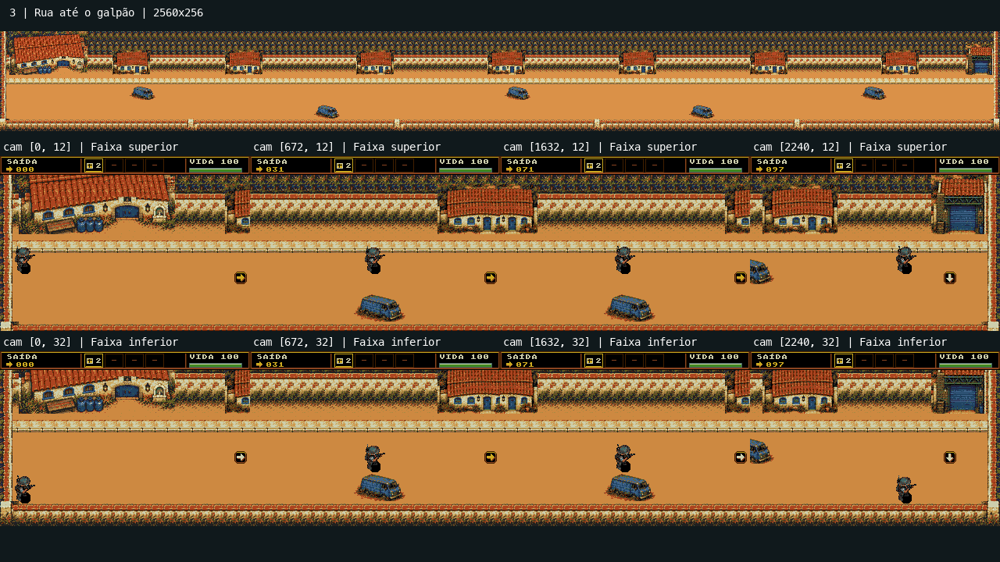
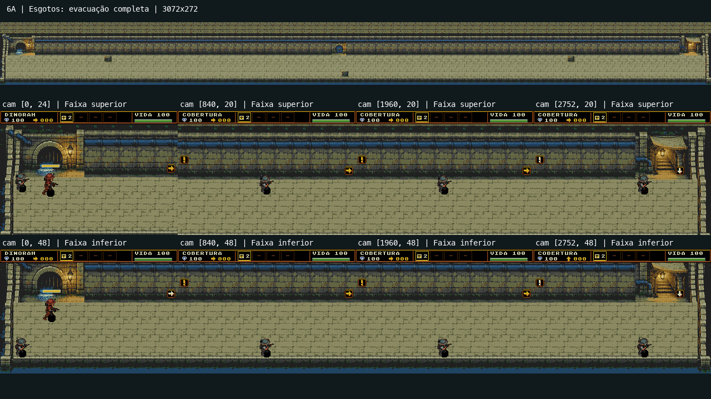
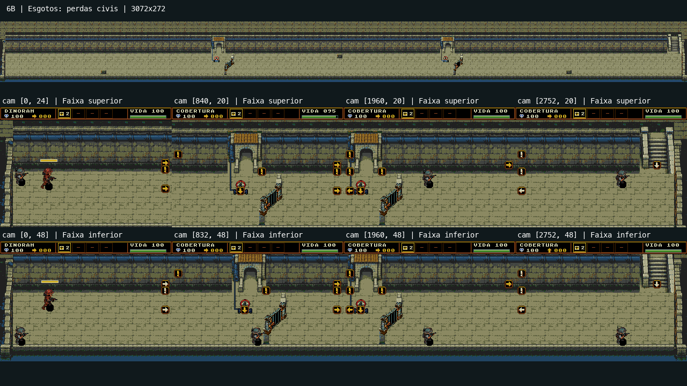
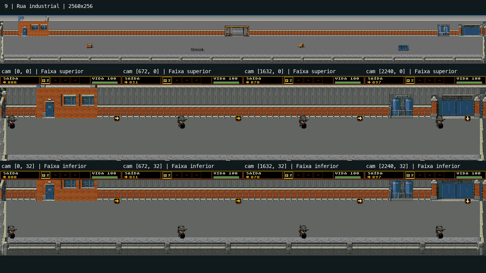
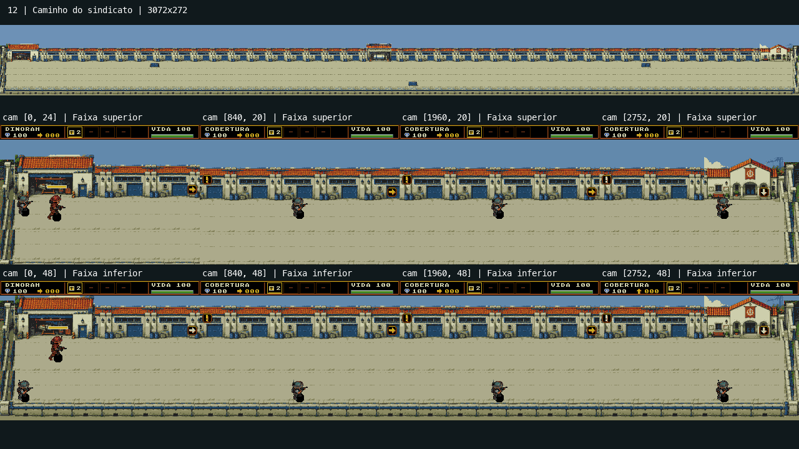

As cinco composições de corredor estão reprovadas.
A aprovação anterior foi precipitada. A integridade dos recortes e os testes técnicos não compensam a falta de ritmo espacial, proporção, identidade e progressão visual.
As pranchas mostram cada mundo inteiro e oito enquadramentos reais da mesma ROM: quatro posições ao longo do trajeto, nas câmeras superior e inferior. Nenhuma fase foi redesenhada nesta reavaliação.
REPROVADA · FASE 3
Rua até o galpão
Uma fileira de casas iguais sobre uma pista laranja extensa. Cinco vans idênticas, espaçadas, produzem um slalom artificial.

Muro e vegetação repetidos dominam a faixa superior; a textura compete com a arquitetura.
A igreja tem peso e escala diferentes das pequenas casas repetidas.
O piso central tem pouca organização de rua além de uma calçada reta; não há sequência de quarteirões, esquina ou abertura de chegada.
Os veículos mudam a passagem, mas parecem obstáculos distribuídos por fórmula, sem relação convincente com entradas, estacionamento ou tráfego.
Redesenho necessário: Redesenhar saída da igreja, trecho residencial e chegada ao galpão como três espaços conectados, com hierarquia, mudanças de largura e implantação plausível dos veículos.
REPROVADA · FASE 6A
Esgotos: evacuação completa
Uma parede contínua e um piso repetido por3072px; três pequenos objetos não dão ritmo à escolta.

Arco inicial e saída são praticamente os únicos acontecimentos arquitetônicos.
Longos trechos de câmera mostram somente muro, tubulação e piso.
O mesmo valor e a mesma textura cobrem grande parte da tela, enfraquecendo personagens e pontos de interesse.
A faixa de circulação uniforme não cria bolsões de combate, pontos de cobertura ou transições reconhecíveis.
Redesenho necessário: Compor galerias, curvas, cruzamentos e câmaras de manutenção conectadas, com canais e passarelas que organizem o caminho da escolta.
REPROVADA · FASE 6B
Esgotos: perdas civis
As duas estações de pressão foram colocadas sobre o mesmo corredor vazio, sem organizar uma instalação convincente.

Entre os mecanismos, reaparece a extensa composição de muro e piso da6A.
Estrutura frontal, portão inclinado e caixas físicas não comunicam uma comporta única com clareza visual.
Acúmulo de setas e marcadores compete com a própria leitura do mecanismo.
As duas estações têm implantação quase idêntica e pouca preparação visual da aproximação.
Redesenho necessário: Projetar duas câmaras de pressão completas, com entrada, válvula ligada à instalação, barreira atravessando a passagem e saída claramente revelada após a abertura.
REPROVADA · FASE 9
Rua industrial
Pista cinza quase vazia diante de um paredão industrial. Quatro equipamentos pequenos ficam isolados por grandes distâncias.

O piso e a parede formam duas superfícies grandes sem hierarquia ou ritmo.
Os equipamentos têm presença pequena em relação à câmera e ao comprimento do percurso.
Várias telas mostram nenhum obstáculo ou estrutura singular no campo.
A aproximação da fábrica tem pouca construção visual entre início, meio e chegada.
Redesenho necessário: Construir sequência de acesso industrial, docas/carga, pátio de máquinas e entrada da fábrica, com volumes inteiros, escala comum e circulação organizada por esses volumes.
REPROVADA · FASE 12
Caminho do sindicato
Uma fachada de garagens repetidas, céu chapado e chão quase vazio. O cenário parece uma maquete comprida.

Três pequenos obstáculos ao longo de3072px deixam grandes trechos sem acontecimentos no campo.
As fachadas são pequenas e repetidas em intervalos rígidos; portas e telhados não estabelecem escala consistente com o ator.
Céu, fachada, chão e muro inferior viram quatro listras paralelas.
A chegada ao sindicato e a preparação da última incursão têm pouca ênfase espacial.
Redesenho necessário: Separar oficinas, trecho de serviço do estaleiro e acesso ao sindicato em setores reconhecíveis; usar construções de escala coerente, mudanças de implantação e uma chegada com hierarquia.